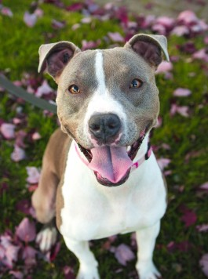

Cães

Pit Bull Terrier
São cães bem receptivos com pessoas, porém, podem apresentar agressividade contra outros cães.
Expectativa de vida:
8 a 15 anos

Sem raça definida
É um cão muito variado, encontrando-se em todas as cores e tipos, de todos os temperamentos. São muito inteligentes e afetuosos, variando de acordo com as características herdadas.
Expectativa de vida:
14 a 18 anos
Labrador Retriever
O labrador é um cão ativo, companheiro e um animal de exposição, além de trabalhar em buscas e salvamento e é o cão guia para deficientes visuais mais visto nas ruas.
Expectativa de vida:
10 a 12 anos